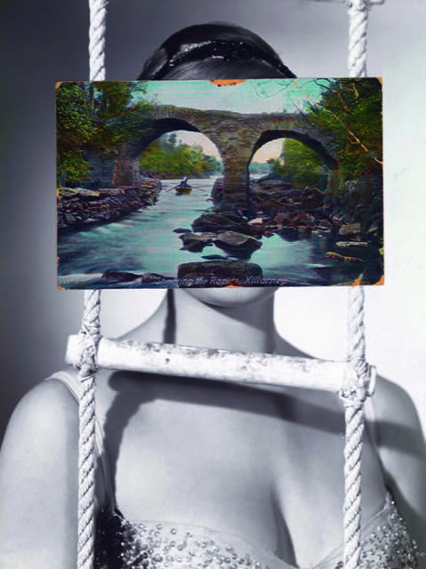
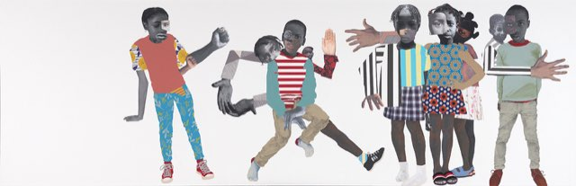
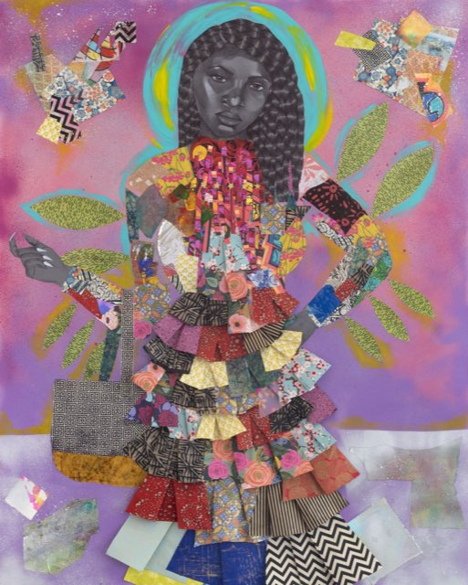
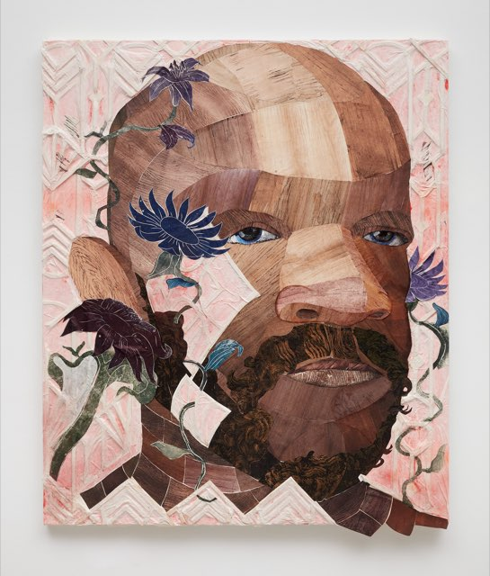
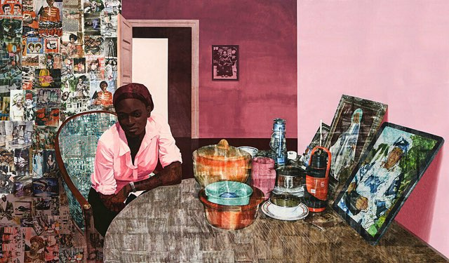
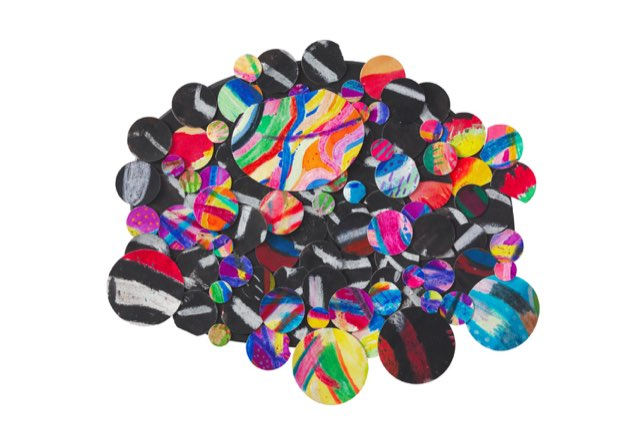
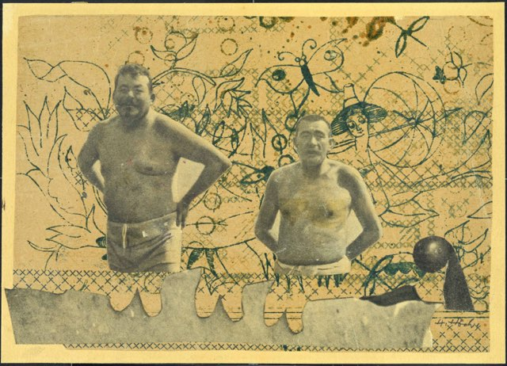

John Stezaker
Mask X · 1982
Fotomontaggio
Guarda: Un paesaggio occupa il posto del volto; i bordi della cartolina restano visibili.


Il collage unisce frammenti di immagini e materiali su un supporto. Il significato nasce anche dal modo in cui li accosti, sovrapponi o trasformi.
Racconta qualcosa della tua esperienza. Puoi esprimere come ti senti in una situazione oppure immaginare un altro modo di esserci, conservando ciò che conta per te.
Picasso e Braque introducono carte e materiali nei loro lavori: i frammenti reali entrano nell’immagine.
Fotomontaggi per cambiare contesto e fare critica sociale; materiali di recupero nelle composizioni Merz.
Immagini trovate e accostamenti inattesi costruiscono scene che ricordano sogni.
Pubblicità, vita quotidiana e identità entrano nel collage. La ricerca prosegue con carte, tessuti, fotografie e strumenti digitali.
Cartaceo: carte e immagini ritagliate.
Materico: superfici e materiali diversi.
Fotomontaggio: frammenti fotografici.
Décollage: strappo di strati sovrapposti.
Digitale: composizione con software.
Osserva le immagini: che cosa è stato ritagliato? Quali parti sono accostate o sovrapposte? Come cambiano il volto, il corpo o il luogo?
Confronta le opere per riconoscere quante forme può avere il collage.
Mask X · 1982
Fotomontaggio
Guarda: Un paesaggio occupa il posto del volto; i bordi della cartolina restano visibili.

Marriage (Film Portrait Collage) LVI · 2007
Collage fotografico
Guarda: Due fotografie si incontrano in un volto che non coincide con nessuna delle due.

Archetype of a 5 Star · 2018
Pittura, glitter e carta ritagliata
Guarda: L’abito è fatto di frammenti diversi: il ritratto prende forma anche attraverso ciò che lo circonda.

Uncle Scott · 2022
Stampe, carte e materiali misti
Guarda: Il volto è riconoscibile pur essendo costruito con molti frammenti e superfici.
Let them be children · 2018
Composizione figurativa a frammenti e pittura
Guarda: I frammenti cambiano scala: mani, volti e corpi non hanno proporzioni uniformi.

Before Now After (Mama, Mummy and Mamma) · 2015
Pittura e immagini fotografiche trasferite
Guarda: Le fotografie entrano nella stanza e negli oggetti; lo sfondo partecipa al ritratto.

Sprewell · 2020
Tessuti, carte, cuciture e pittura
Guarda: Il corpo combina tessuti, disegni e immagini: anche la materia costruisce la figura.

Airborne Double · 2022
Pittura, cartone e materiali su giornale
Guarda: Le figure ripetono un gesto e sembrano sospese: il movimento è parte della composizione.

Untitled #3C · 2009
Collage di carte e materiali misti
Guarda: La composizione nasce da frammenti, ritmo e densità; non contiene un ritratto riconoscibile.

No It Ain’t, Yes It Is · 2023
Carte, tessuti, filo e pittura
Guarda: Piccole figure e frammenti colorati lasciano un’ampia zona libera.

The Dove · 1964
Carte stampate ritagliate, gouache e matite
Guarda: Persone, gesti e luoghi si intrecciano: il racconto non è affidato a un solo simbolo.

Staatshäupter · 1918–1920
Collage
Guarda: Figure fotografiche e sfondo illustrato appartengono a contesti diversi.
Le opere della mostra Multiplicity documentano esperienze e identità di artisti afroamericani contemporanei.
Archetype of a 5 Star · 2018
© Jamea Richmond-Edwards · Rubell Museum
Fonte: Frist Art Museum
Uncle Scott · 2022
© Yashua Klos · Cortesia artista e Sikkema Jenkins & Co.
Fonte: Frist Art Museum
Let them be children · 2018
© Deborah Roberts · Foto Sydney Collins / Virginia Museum of Fine Arts
Fonte: Frist Art Museum
Before Now After (Mama, Mummy and Mamma) · 2015
© Njideka Akunyili Crosby · Cortesia artista e Victoria Miro
Fonte: Whitney Museum
Sprewell · 2020
Cortesia artista e Pilar Corrias · Solomon R. Guggenheim Museum
Fonte: Frist Art Museum
Untitled #3C · 2009
© Howardena Pindell · Cortesia artista e Garth Greenan Gallery
Fonte: Frist Art Museum
No It Ain’t, Yes It Is · 2023
© Brittney Boyd Bullock · Cortesia artista
Fonte: The Phillips Collection
Un nucleo è un aspetto della tua esperienza: un’emozione, una difficoltà quotidiana o un modo di essere che vorresti esplorare. Parti da una situazione concreta e usa le immagini per dare forma a ciò che vuoi raccontare.
«Sto per mostrare un lavoro che mi piace: ho voglia di presentarlo e sono in tensione.»
Vicino a una figura, alcuni frammenti si addensano e altri si aprono verso l’esterno.
«Per me, le parti fitte esprimono tensione; quelle aperte, entusiasmo. Possono convivere.»
Esempio inventato. Forme e colori possono assumere significati diversi per altre persone.
«Vorrei continuare ad ascoltare e riuscire anche a proporre un’idea.» Provo una seconda figura più grande e vicina al gruppo, mantenendo un frammento comune: posso cambiare senza perdere ciò che riconosco in me.
Cartoncino A4 o A3 · forbici · colla stick · immagini e carte da ritagliare.
Facoltative: una o due foto tue stampate o fotocopiate, anche in bianco e nero. Conserva gli originali.
Usa quelli che servono alla tua idea: bastano pochi materiali recuperati.
Ritaglia, ripeti un dettaglio, cambia sfondo. Puoi usare una tua foto in copia, una figura di rivista o una sagoma.
Riviste, giornali, carta colorata o da regalo: taglia, strappa, accosta.
Velina o carta da lucido: copri e lascia intravedere.
Carta crespa, da pacco o cartone: piega, increspa, crea un piccolo rilievo.
Pezzi leggeri per figure, collegamenti o confini. Fissali con poca colla vinilica.
Parole ritagliate, matita e pennarello: collega gli elementi o frammenta una frase.
Un ritratto, una figura intera, una mano, un luogo o un oggetto fotografato da te. Scegli ciò che ti va di usare e mostrare.
Metti la tua figura in un ambiente diverso: quale emozione o possibilità vuoi mostrare?
Ripeti la figura cambiando scala o posizione. Un dettaglio comune tiene insieme le due versioni.
Copri e scopri con carte e parole. Scegli quanto rendere visibile.
Se compaiono altre persone, chiedi il loro permesso; puoi scegliere un dettaglio senza volti riconoscibili.
Raccogli pochi frammenti legati al tuo nucleo.
Componili sul supporto senza incollare.
Sposta, ingrandisci, sovrapponi o cambia il contesto. Che cosa esprime la nuova disposizione?
Scegli la composizione che racconta la tua idea. Se vuoi, fotografa le prove.
Può offrire un’occasione per esprimersi, raccontare e condividere, anche senza saper disegnare. Con persone anziane puoi proporre immagini legate alla loro storia; con bambini forme e ritagli semplici; quando ci sono difficoltà motorie, pezzi più grandi o già ritagliati.
Adatta materiali, tempi e aiuti alla persona. Le immagini possono sostenere il dialogo fra lingue diverse, ma il loro significato va chiarito insieme.
Ruolo dell’operatore: preparare, facilitare e ascoltare; rispettare la scelta di partecipare e quanto condividere. Un laboratorio espressivo di animazione non è un trattamento di arteterapia e non serve a diagnosticare la personalità.
Indica il nucleo e la situazione, senza dettagli personali che vuoi tenere per te.
Mostra una scelta precisa: materiale, scala, posizione, strato o contesto.
Spiega che cosa esprime per te e che cosa è cambiato durante le prove.
Un nucleo riconoscibile, scelte visive motivate, uso consapevole dei materiali e rispetto nella condivisione.
Hai provato una tecnica espressiva che potrai adattare a persone e contesti diversi, rispettando preferenze, possibilità e autonomia.
Competenza principale — C8: Realizzare semplici attività di animazione ludica e sociale in contesti noti.
Saperi: Obiettivi e tecniche dell'animazione ludica e sociale anche con strumenti multimediali.
Abilità: Identificare le principali tecniche di animazione ludica e sociale; Riconoscere i materiali e gli strumenti utili all'animazione ludica e sociale.
Provi la tecnica su di te per imparare a proporre un’attività espressiva ad altre persone.
Autori, titoli, crediti e fonti delle immagini accompagnano ogni opera nella galleria.